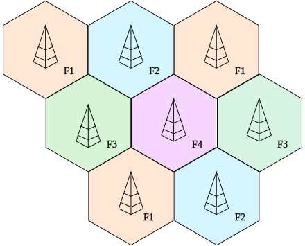

Infrastructure for Mobile Phones
The critical advantage that modern cellular networks have over predecessor systems is the concept of frequency reuse allowing many simultaneous telephone conversations in a given service area. This allows efficient use of the limited radio spectrum allocated to mobile services, and lets thousands of subscribers converse at the same time within a given geographic area. Former systems would cover a service area with one or two powerful base stations with a range of up to tens of kilometres (miles), using only a few sets of radio channels (frequencies). Once these few channels were in use by customers, no further customers could be served until another user vacated a channel. It would be impractical to give every customer a unique channel since there would not be enough bandwidth allocated to the mobile service. As well, technical limitations such as antenna efficiency and receiver design limit the range of frequencies a customer unit could use.
Facts:
Do you actually remember these? Not long ago, we used to wear them on our wrists and those alarm clocks used to be on our bedside table. Today we have almost forgotten about them, soon they will completely disappear. Statistics say that around 60% of users have stopped using these classics gadgets and have replaced them with the clock and the alarm clock features included in those smartphones.A cellular network mobile phone system gets its name from dividing the service area into many small cells, each with a base station with (for example) a useful range on the order of a kilometre (mile). These systems have dozens or hundreds of possible channels allocated to them. When a subscriber is using a given channel for a telephone connection, that frequency is unavailable for other customers in the local cell and in the adjacent cells. However, cells further away can re-use that channel without interference as the subscriber's handset is too far away to be detected. The transmitter power of each base station is coordinated to efficiently service its own cell, but not to interfere with the cells further away.
Automation embedded in the customer's handset and in the base stations control all phases of the call, from detecting the presence of a handset in a service area, temporary assignment of a channel to a handset making a call, interface with the land-line side of the network to connect to other subscribers, and collection of billing information for the service. The automation systems can control the "hand off" of a customer handset moving between one cell and another so that a call in progress continues without interruption, changing channels if required. In the earliest mobile phone systems by contrast, all control was done manually; the customer would search for an unoccupied channel and speak to a mobile operator to request connection of a call to a landline number or another mobile. At the termination of the call the mobile operator would manually record the billing information.
Facts:
We check our mobile phone about 150 times a day on averageMobile phones communicate with cell towers that are placed to give coverage across a telephone service area, which is divided up into 'cells'. Each cell uses a different set of frequencies from neighboring cells, and will typically be covered by three towers placed at different locations. The cell towers are usually interconnected to each other and the phone network and the internet by wired connections. Due to bandwidth limitations each cell will have a maximum number of cell phones it can handle at once. The cells are therefore sized depending on the expected usage density, and may be much smaller in cities. In that case much lower transmitter powers are used to avoid broadcasting beyond the cell. In order to handle the high traffic, multiple towers can be set up in the same area (using different frequencies). This can be done permanently or temporarily such as at special events or in disasters. Cell phone companies will bring a truck with equipment to host the abnormally high traffic.
Capacity was further increased when phone companies implemented digital networks. With digital, one frequency can host multiple simultaneous calls. Additionally, short-range Wi-Fi infrastructure is often used by smartphones as much as possible as it offloads traffic from cell networks on to local area networks.